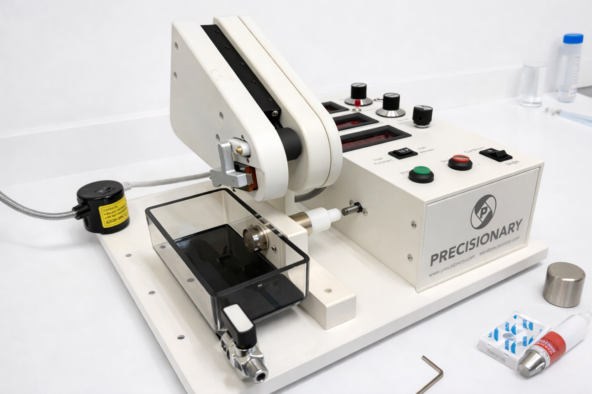

Fiber Photometry
Fiber photometry enables real-time monitoring of neural population activity in freely behaving animals. By delivering excitation light through an implanted optical fiber and collecting fluorescence from genetically encoded calcium or neurotransmitter indicators, we can track how specific cell types respond during social interactions and sensory processing.
Neuropixels Recording
Neuropixels probes allow us to record from hundreds of neurons simultaneously across multiple brain regions. This high-density silicon probe technology provides single-unit resolution, enabling us to dissect the neural coding principles underlying circuit-level computations in sensory and social brain networks.

Stereotaxic Injection
Stereotaxic surgery allows precise targeting of specific brain regions for viral vector delivery, enabling optogenetic and chemogenetic manipulation of defined neural circuits. Our setup includes precision microinjection systems and real-time coordinate tracking for accurate and reproducible targeting.

Vibratome Sectioning
The vibratome produces precise brain tissue sections for histological analysis, including immunohistochemistry and fluorescence imaging. This enables us to verify injection sites, map viral expression patterns, and visualize neural circuit architecture with cellular resolution.